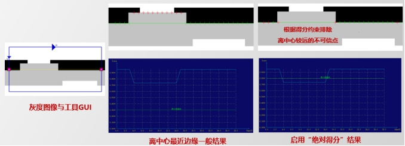
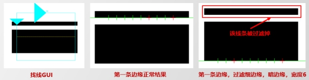

Công cụ tìm đường thẳng nâng cao chủ yếu dùng để khớp và tìm các cạnh đường thẳng trong vùng ROI đã chỉ định, thường được sử dụng kết hợp với các công cụ định vị. Hiệu quả ứng dụng thực tế như Hình 1 bên dưới.
Nguyên lý tương tự như công cụ tìm đường, công cụ tìm đường nâng cao sử dụng các thông số caliper trong vùng tìm kiếm để phát hiện các điểm biên ảnh, sau đó khớp tuyến tính các điểm đó để tìm ra đường thẳng mục tiêu, như hình dưới.

Các tình huống ứng dụng của công cụ tìm đường thẳng nâng cao có thể được chia thành 3 loại:
Trong các dự án đo lường, có thể sử dụng như phần tử đặc trưng hoặc phần tử trung gian để đo khoảng cách giữa các đoạn thẳng, góc giữa các đường thẳng, hoặc tìm giao điểm của các đường để tính khoảng cách giữa các điểm.
Kết hợp với công cụ định vị hình học để tìm các đặc trưng cố định của vật thể làm tham chiếu, đạt được định vị chính xác.
Trong các dự án hiệu chỉnh/định vị, sử dụng công cụ tìm đường nâng cao cùng với công cụ tìm đường tròn, giao điểm... để tính toạ độ hình ảnh của các điểm Mark, kết hợp với toạ độ cơ khí để tính toán quan hệ giữa hệ toạ độ hình ảnh và hệ toạ độ cơ khí.
Khác biệt giữa công cụ tìm đường nâng cao và công cụ tìm đường thường: Công cụ tìm đường nâng cao hỗ trợ thêm tính năng loại bỏ điểm ngoại lai, lọc cạnh mảnh, ràng buộc điểm cạnh và góc cạnh để cải thiện độ chính xác và ổn định.
Ảnh đầu vào: ảnh cần kiểm tra
Biến đổi tuyến tính 2D: thường lấy từ công cụ định vị, biểu thị sự biến đổi tịnh tiến, xoay, phóng to/thu nhỏ giữa đặc trưng trong ảnh hiện tại và mẫu chuẩn. Trong quá trình kiểm tra online, có thể dùng tham số này để điều chỉnh vùng tìm kiếm.


Giải thích các thông số quan trọng như sau, các thông số khác tham khảo mục “5. Giải thích tham số”.
Chế độ cạnh đơn và cạnh đôi được minh hoạ trong Hình 2 và Hình 3. Khi dùng chế độ cạnh đơn, kết quả như đường đỏ trong Hình 2(b); chế độ cạnh đôi sẽ lấy trung tuyến của hai cạnh (đường đỏ trong Hình 3(b)).


Cực tính cạnh dựa vào sự chuyển đổi cường độ pixel theo hướng dương trục Y của caliper. Ví dụ, từ sáng đến tối thì chọn “Sáng đến Tối”; ngược lại thì “Tối đến Sáng”; nếu không chắc, chọn “Bất kỳ”.

Như Hình 5, các điểm thập đỏ là điểm ngoại lai (không dùng để khớp). Tỷ lệ các điểm này gọi là tỷ lệ điểm ngoại lai. Khi nhiễu cạnh lớn, nên thiết lập tỷ lệ này.

Đối với ảnh nhiều cạnh, cần chọn thuộc tính cạnh phù hợp.

Cạnh tốt nhất: cạnh có độ tương phản mạnh nhất, điểm cao nhất;
Cạnh đầu tiên: cạnh xuất hiện đầu tiên theo trục Y caliper, phù hợp cực tính, điểm càng đầu càng cao;
Cạnh cuối cùng: tương tự, nhưng là cạnh cuối cùng;
Cạnh gần tâm nhất: cạnh gần nhất với đường vàng trung tâm;
Cạnh theo kỳ vọng xám: cạnh có cường độ gần với giá trị kỳ vọng. Ví dụ nếu bên tối có xám là 195, thì kỳ vọng khoảng 190–200.
Lưu ý: Trong chế độ cạnh đôi, không hỗ trợ chọn “Cạnh theo kỳ vọng xám”.
Nên đặt cách biệt nhỏ hơn 10 so với thực tế, ví dụ thực tế là 195 thì đặt 190–200.
Tương tự như phía tối.
Dùng để loại bỏ điểm không mong muốn.
Chế độ điểm cạnh: “Điểm tuyệt đối” hoặc “Điểm tương đối”. Dùng “Tuyệt đối” trong hầu hết các trường hợp, “Tương đối” khi ánh sáng thay đổi lớn.
Giá trị ngưỡng: điểm thấp hơn sẽ bị bỏ.
Giao diện ngưỡng điểm cạnh (GUI): Trục X là điểm, trục Y là điểm số, đường xanh là ngưỡng.



Loại bỏ đường sáng hoặc tối mảnh gần cạnh mong muốn để tránh nhiễu.
Loại cạnh lọc: Nếu nhiễu là đường tối, chọn “Tối”; nếu là đường sáng thì “Sáng”.
Chiều rộng cạnh lọc: thiết lập lớn hơn chiều rộng thực tế cần lọc. Ví dụ cần lọc đường rộng 5px, thiết lập 5.5, 6 hoặc 10.

Chọn “Có”, nếu giá trị là dương thì dịch lên/phải, âm thì dịch xuống/trái. Xem Hình 11.
Cho phép phán đoán kết quả kiểm tra như tâm đường, góc tuyệt đối, góc lệch có hợp lệ không. Nếu vượt ngưỡng thì công cụ báo lỗi (Xem Hình 12).
| Mô tả sự cố | Cách xử lý |
|---|---|
| ROI không cho phép thiết lập mặt nạ | Kiểm tra tham số “Chế độ mặt nạ” có đặt là “Có” không. Chỉ khi chọn “Có” mới thiết lập được mặt nạ. |
| ROI không thiết lập được tham số caliper | Kiểm tra tham số “Chế độ thủ công” có đặt là “Có” không. Chọn “Có” mới thiết lập caliper được. |
| Tìm đường thất bại |
1. Tìm thất bại: Xem lỗi đầu ra, thử điều chỉnh ngưỡng tương phản, tỷ lệ điểm ngoại lai, chế độ kiểm tra lại... 2. Kiểm tra thất bại: các ngưỡng kết quả như tâm, góc vượt giới hạn – cần điều chỉnh ngưỡng hợp lý. |
| Tên Tham số | Mô tả Tham số |
|---|---|
| Ảnh đầu vào | Chiều rộng, chiều cao, kích thước pixel của ảnh đầu vào, giống như tham số ảnh trong cửa sổ hình ảnh. |
| Biến đổi tuyến tính 2D | Phép tịnh tiến, xoay, phóng to/thu nhỏ so với ảnh mẫu. |
| Đường thẳng tham chiếu song song/vuông góc | Nếu bật tham số đường thẳng tham chiếu trong cửa sổ thuộc tính, chọn “Có” thì cần cấu hình tham số này. |
| Đường thẳng vị trí tham chiếu | Nếu bật tham số đường thẳng tham chiếu trong cửa sổ thuộc tính, chọn “Có” thì cần cấu hình tham số này. |
| Vùng tìm kiếm | Phạm vi tìm kiếm mục tiêu trong ảnh, được thiết lập bằng Tâm (Center), Kích thước (Size) và Góc xoay (Rotation). |
| Mục tiêu theo dõi | Vùng tìm kiếm được biến đổi affine theo phép biến đổi tuyến tính 2D. |
| Chế độ biên cạnh | Công cụ caliper có 2 chế độ biên cạnh: biên đơn và biên đôi.  |
| Cực tính biên cạnh | Cực tính là kiểu chuyển đổi mức xám của biên ảnh, gồm 3 loại: bất kỳ, sáng sang tối và tối sang sáng. |
| Ngưỡng tương phản | Công cụ caliper mặc định dùng điểm số dựa trên tương phản, tức đánh giá độ mạnh của tín hiệu biên, đầu ra là điểm biên mạnh nhất. Giá trị ngưỡng: 0~255. |
| Thuộc tính biên cạnh | Trong vùng tìm kiếm, caliper xác định vị trí chính xác của biên ảnh theo thuộc tính biên cạnh. Có 5 loại: biên tốt nhất, biên đầu tiên, biên cuối cùng, biên gần tâm nhất, biên có mức xám kỳ vọng. |
| Mức xám kỳ vọng phía tối | Mức xám kỳ vọng phía tối của biên. Chỉ có hiệu lực khi thuộc tính biên là "biên có mức xám kỳ vọng". |
| Mức xám kỳ vọng phía sáng | Mức xám kỳ vọng phía sáng của biên. Chỉ có hiệu lực khi thuộc tính biên là "biên có mức xám kỳ vọng". |
| Tỷ lệ điểm ngoại lệ | Điểm ngoại lệ là điểm lệch khỏi đường thẳng. Tỷ lệ điểm ngoại lệ là tỉ lệ các điểm không tham gia vào quá trình khớp đường thẳng. Phạm vi: 0~0.5. |
| Tự động cập nhật tỷ lệ điểm ngoại lệ | Tự động điều chỉnh tham số tỷ lệ điểm ngoại lệ để khớp đường thẳng tốt hơn với kết quả kỳ vọng. |
| Có sử dụng giới hạn góc hay không | Sử dụng ràng buộc góc để tìm đường trong phạm vi góc được thiết lập. |
| Góc kỳ vọng | Góc dự kiến của đường thẳng cần tìm. |
| Sai số góc tối đa | Độ sai lệch cho phép với góc kỳ vọng. Phạm vi tìm thực tế là [góc kỳ vọng - sai số, góc kỳ vọng + sai số]. |
| Có sử dụng ngưỡng điểm số biên không | Lọc các điểm dò không đạt ngưỡng điểm số. |
| Chế độ ngưỡng điểm số biên | Chọn giữa ngưỡng điểm số tuyệt đối hoặc tương đối. Thông thường dùng tuyệt đối. Trong điều kiện ánh sáng thay đổi lớn, dùng tương đối. |
| Ngưỡng điểm số | Lọc các điểm dò có điểm số thấp hơn ngưỡng. |
| Hiển thị giao diện GUI ngưỡng điểm số | Hiển thị đồ thị GUI ngưỡng điểm số trong kết quả, thuận tiện để chọn ngưỡng phù hợp. |
| Có lọc biên mảnh hay không | Khi gần biên cần tìm có đường sáng/tối hẹp gây nhiễu, có thể lọc biên mảnh để loại bỏ nhiễu. |
| Loại biên cần lọc | Lọc biên tối hay sáng. |
| Độ rộng biên cần lọc | Lọc các đường biên có độ rộng nhỏ hơn giá trị này. Nên đặt lớn hơn độ rộng thực tế một chút, ví dụ +0.5, +1, +2 để tránh sai số khi công cụ không song song với biên. |
| Chế độ mặt nạ | Trong quá trình huấn luyện mẫu, có thể dùng mặt nạ để loại trừ vùng không tham gia vào huấn luyện đặc trưng hình học. |
| Chế độ thủ công | Chọn “Có” để cho phép chỉnh tay tham số caliper (nhấp chuột phải để điều chỉnh). Chọn “Không” để không cho phép chỉnh tay. |
| Hiển thị kết quả theo thời gian thực | Chọn “Có” để hiển thị kết quả ngay khi thay đổi tham số mà không cần chạy công cụ. Chọn “Không” thì phải chạy lại công cụ để cập nhật kết quả. |
| Hiển thị điểm dò | Chọn “Có” để hiển thị điểm dò từ caliper. Mỗi caliper tương ứng một điểm dò, có thể dùng làm đầu vào cho công cụ khác. Điểm ngoại lệ hiển thị màu đỏ, còn lại màu xanh lá. |
| Chế độ kiểm lại | Nếu tìm đường thất bại và bật chế độ kiểm lại, kết quả sẽ được xuất từ mẫu caliper sau biến đổi. |
| Bật dịch song song | Chọn “Có” để dịch kết quả đường thẳng theo tham số dịch song song. |
| Bật đường tham chiếu | Dựa vào đường tham chiếu để giới hạn vùng tìm kiếm. Nếu chọn “Có” thì cần cấu hình kiểu hiệu chỉnh, sai số góc và khoảng cách đường tham chiếu. Nếu khoảng cách là 0.000000 thì coi như không bật. |
| Kiểu hiệu chỉnh | Gồm hai kiểu: song song và vuông góc. |
| Sai số góc cho phép | Sai số góc cho phép so với đường tham chiếu, vượt quá sẽ dùng góc của đường tham chiếu để hiệu chỉnh. |
| Khoảng cách đường tham chiếu | Nhập khoảng cách từ đường tham chiếu. Trái và trên là giá trị âm; phải và dưới là giá trị dương. |
| Chuẩn hóa góc | Là việc giới hạn góc của đường kết quả trong một phạm vi nhất định. Có 4 dạng: [-90°, 90°)、[-180°, 180°)、[0°, 180°)、[0°, 360°)。 |
| Ngưỡng trên tọa độ X trọng tâm | Ngưỡng trên để đánh giá tọa độ X của trọng tâm đường thẳng, phạm vi [0,999999.999999], và phải ≥ ngưỡng dưới. |
| Ngưỡng dưới tọa độ X trọng tâm | Ngưỡng dưới để đánh giá tọa độ X của trọng tâm đường thẳng. |
| Ngưỡng trên tọa độ Y trọng tâm | Ngưỡng trên để đánh giá tọa độ Y của trọng tâm đường thẳng. |
| Ngưỡng dưới tọa độ Y trọng tâm | Ngưỡng dưới để đánh giá tọa độ Y của trọng tâm đường thẳng. |
| Ngưỡng trên góc tuyệt đối của đường thẳng | Ngưỡng trên của góc tuyệt đối đường thẳng, phạm vi [-180.0, 360.0)，và phải ≥ ngưỡng dưới. |
| Ngưỡng dưới góc tuyệt đối của đường thẳng | Ngưỡng dưới của góc tuyệt đối đường thẳng. |
| Ngưỡng trên góc thay đổi của đường thẳng | Ngưỡng trên của góc thay đổi đường thẳng, phạm vi [-90.0, 90.0)。 |
| Ngưỡng dưới góc thay đổi của đường thẳng | Ngưỡng dưới của góc thay đổi đường thẳng. |
| Tên tham số | Mô tả tham số |
|---|---|
| Ảnh đầu vào | Đầu ra chiều rộng, chiều cao và kích thước pixel của ảnh. |
| Kết quả đường thẳng | Tọa độ điểm đi qua đường thẳng, vector hướng và góc xoay. |
| Kết quả đoạn thẳng | Tọa độ điểm bắt đầu và điểm kết thúc của đoạn thẳng. |
| Góc tuyệt đối của đường thẳng | Đầu ra góc của đường thẳng. |
| Góc thay đổi của đường thẳng | Đầu ra góc thay đổi của đường thẳng so với đường tham chiếu. |
| Kết quả đường thẳng dịch song song | Tọa độ điểm bắt đầu và vector hướng của đường thẳng dịch song song. |
| Kết quả đoạn thẳng dịch song song | Tọa độ điểm bắt đầu và điểm kết thúc của đoạn thẳng dịch song song. |
| Trọng tâm | Tọa độ trọng tâm của đoạn thẳng. |
| Kết quả thực thi | Kết quả thực thi của công cụ. |
| Thời gian thực thi | Thời gian thực thi của công cụ. |
参见“\Samples\高级找线工具.gvp”。